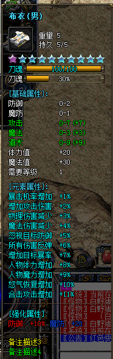
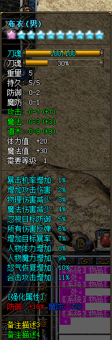

自定义装备进度条 类似刀魂功能
功能说明：可以给装备自定义进度条，支持2个进度条。显示在装备名称的下面一行
必备补丁NewopUI.PAK 490 是第一个进度条的背景图片 491~499 为静态的进度条图 500~509 为动态的进度条图
必备补丁NewopUI.PAK 510 是第二个进度条的背景图片 511~519 为静态的进度条图 520~529 为动态的进度条图
检测进度条是否开启：
CHECKCUSTOMITEMPROGRESSBAR 装备位置(-1时是OK框中的装备, 0~28或30~47时是穿在身上的装备) 进度条序号(0=表示第一个进度条,1表示第二个进度条)
[@检测衣服的第一个进度条是否开启]
#IF
CHECKCUSTOMITEMPROGRESSBAR 0 0
#ACT
SENDMSG 6 衣服的第一个进度条已经开启
#ELSEACT
SENDMSG 6 衣服的第一个进度条没有开启
检测进度条值：
CHECKCUSTOMITEMPROGRESSBARVALUE 装备位置(-1时是OK框中的装备, 0~28或30~47时是穿在身上的装备) 进度条序号(0=表示第一个进度条,1表示第二个进度条) 检测类型(0当前进度值,1进度条最大值,2进度条等级(0~65535)) 检测符(<,>,=) 检测值
检测进度条百分比：
CHECKCUSTOMITEMPROGRESSBARPERCENT 装备位置(-1时是OK框中的装备, 0~28或30~47时是穿在身上的装备) 进度条序号(0=表示第一个进度条,1表示第二个进度条) 检测符(<,>,=) 检测值(0~100)
修改自定义装备进度条属性：
CHANGECUSTOMITEMPROGRESSBAR 参数1 参数2 参数3 参数4
参数1:装备位置(-1时是OK框中的装备, 0-18时是穿在身上的装备)
参数2:进度条序号。参数范围(0,1)0=表示第一个进度条 1表示第二个进度条
参数3:修改类型，参数范围(0~4) 0显示或关闭进度条 1进度条名称(会显示在进度条左边) 2进度条名称颜色(0~255) 3进度条图片张数(1~9) 4显示进度的数值(0~2)
参数4:
参数3=0时，范围(0关闭进度条,1显示进度条)
参数3=1时，进度条名称(15个字符)支持显示进度值、百分比、进度条等级 %p表示当前进度值 %m表进度条最大值 %l表示进度条等级 %r表示进度条百分比
参数3=2时，进度条名称颜色(0~255)
参数3=3时，进度条图片张数(1~19 1~9表示绘制单张的，如果是第一个进度条，如果参数4=1就会绘制491，如果参数4=2就会绘制492。如果参数4在10~19之间，表示循环绘制，如果参数4=10 表示绘制500，如果参数4=11 表示在500~501之间循环绘制，如果参数4=12 表示在500~502之间循环绘制)
参数3=4时，显示进度的数值(0不显示,1百分比显示方式 2数值显示方式)
修改自定义装备进度条属性值：
CHANGECUSTOMITEMPROGRESSBARVALUE 装备位置(-1时是OK框中的装备, 0~28或30~47时是穿在身上的装备) 进度条序号(0=表示第一个进度条 1表示第二个进度条) 类型(0表示当前进度 1表示进度条最大值,2表示进度条等级(0~65535)) 操作符(+,-,=) 值


例：
[@检测衣服的第一个进度条是否开启]
#IF
CHECKCUSTOMITEMPROGRESSBAR 0 0
#ACT
SENDMSG 6 衣服的第一个进度条已经开启
#ELSEACT
SENDMSG 6 衣服的第一个进度条没有开启
[@检测衣服的第一个进度条最大值]
#IF
CHECKCUSTOMITEMPROGRESSBARVALUE 0 0 1 > 99
#ACT
SENDMSG 6 衣服的第一个进度条最大值大于99
#ELSEACT
SENDMSG 6 衣服的第一个进度条最大值不大于99
[@检测衣服的第一个进度条当前值]
#IF
CHECKCUSTOMITEMPROGRESSBARVALUE 0 0 0 > 99
#ACT
SENDMSG 6 衣服的第一个进度条当前值大于99
#ELSEACT
SENDMSG 6 衣服的第一个进度条当前值不大于99
[@检测衣服的第一个进度条等级]
#IF
CHECKCUSTOMITEMPROGRESSBARVALUE 0 0 2 > 99
#ACT
SENDMSG 6 衣服的第一个进度条等级大于99
#ELSEACT
SENDMSG 6 衣服的第一个进度条等级不大于99
[@检测衣服的第一个进度条百分比]
#IF
CHECKCUSTOMITEMPROGRESSBARPERCENT 0 0 > 99
#ACT
SENDMSG 6 衣服的第一个进度条百分比为100%
[@显示衣服的第一个进度条]
#ACT
CHANGECUSTOMITEMPROGRESSBAR 0 0 0 1
[@显示衣服的第二个进度条]
#ACT
CHANGECUSTOMITEMPROGRESSBAR 0 1 0 1
[@关闭衣服的第一个进度条]
#ACT
CHANGECUSTOMITEMPROGRESSBAR 0 0 0 0
[@关闭衣服的第二个进度条]
#ACT
CHANGECUSTOMITEMPROGRESSBAR 0 1 0 0
[@修改衣服的第一个进度条的名称]
#ACT
CHANGECUSTOMITEMPROGRESSBAR 0 0 1 刀魂
;支持显示进度值、百分比、进度条等级 %p表示当前进度值 %m表进度条最大值 %l表示进度条等级 %r表示进度条百分比
;例如:
;CHANGECUSTOMITEMPROGRESSBAR 0 0 1 刀魂: %l
;CHANGECUSTOMITEMPROGRESSBAR 0 0 1 刀魂: %r
;CHANGECUSTOMITEMPROGRESSBAR 0 0 1 刀魂: %p-%m
[@修改衣服的第一个进度条的名称颜色]
#ACT
CHANGECUSTOMITEMPROGRESSBAR 0 0 2 254
[@修改衣服的第一个进度条静态图片素材]
#ACT
CHANGECUSTOMITEMPROGRESSBAR 0 0 3 1
SENDMSG 6 衣服的第一个进度条静态图片素材,使用NewopUI.PAK第491号
[@修改衣服的第一个进度条动态图片素材]
#ACT
CHANGECUSTOMITEMPROGRESSBAR 0 0 3 19
SENDMSG 6 衣服的第一个进度条动态图片素材,使用NewopUI.PAK第500~509号之间循环播放
[@修改衣服的第一个进度条图片素材]
#ACT
CHANGECUSTOMITEMPROGRESSBAR 0 0 3 1
[@修改衣服的第一个进度条百分比显示]
#ACT
CHANGECUSTOMITEMPROGRESSBAR 0 0 4 1
[@修改衣服的第一个进度条数值显示]
#ACT
CHANGECUSTOMITEMPROGRESSBAR 0 0 4 2
[@修改衣服的第一个进度条的最大值]
#ACT
CHANGECUSTOMITEMPROGRESSBARVALUE 0 0 1 = 100
;当前进度值不能超过进度条最大值，一般先要修改进度条最大值，然后在修改当前进度值。这里最大值设置为100
[@修改衣服的第一个进度条的当前进度值]
#ACT
CHANGECUSTOMITEMPROGRESSBARVALUE 0 0 0 + 10
;当前进度值不能超过进度条最大值，一般先要修改进度条最大值，然后在修改当前进度值。
[@修改衣服的第一个进度条的等级]
#ACT
CHANGECUSTOMITEMPROGRESSBARVALUE 0 0 2 + 10
;当前进度值不能超过进度条最大值，一般先要修改进度条最大值，然后在修改当前进度值。
装备位置代码:
0 盔甲
1 武器
2 照明物
3 项链
4 头盔
5 右手镯
6 左手镯
7 右戒指
8 左戒指
9 护身符
10 腰带
11 鞋子
12 宝石
13 斗笠
14 军鼓
15 马牌
16 盾牌
17 时装衣服 时装12个
18 时装武器
19 时装项链
20 时装头盔
21 时装左手镯
22 时装右手镯
23 时装左戒指
24 时装右戒指
25 时装勋章
26 时装腰带
27 时装鞋子
28 时装宝石
30~41 十二个首饰盒装备
42-47 六个首饰盒装备位置